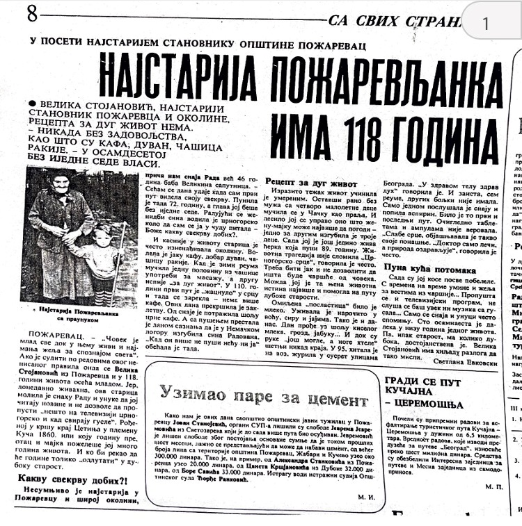

ПРВА ПРИЧА
Велика Стојановић – жена којој је приписано 118 година живота
У новинском чланку листа „Реч народа“ из Пожаревца, објављеном 1977. године, Велика Стојановић представљена је као најстарија становница Пожаревца и околине. Наслов текста гласи: „Најстарија Пожаревљанка има 118 година“.
И њен надгробни споменик бележи да је преминула у 118. години. Новински запис и сачувани споменик тако заједно чувају сведочанство о изузетно дугом животу једне Пожаревљанке.
Према подацима достављеним за овај каталог, Велика је била блиска рођака писца Слободана Стојановића. Та породична веза представља додатни траг за истраживање и биће допуњена када се прибаве поузданији подаци.
- Гробље
- Старо гробље у Пожаревцу
- Парцела
- 5
- Гробно место
- 148 N.B.
- Новински извор
- „Реч народа“, Пожаревац, 1977. (број и датум издања непознати)
Навод о 118 година пренет је из новинског чланка и са надгробног споменика. Није пронађена независна потврда да је била званични рекордер дуговечности у СФРЈ.
